“GESTÃO FINANCEIRA
Ponto de equilíbrio
O ponto de equilíbrio é um indicador de segurança do negócio, pois mostra o quanto é necessário vender para que as receitas se igualem às despesas e aos custos.
O ponto de equilíbrio é um indicador de segurança do negócio, pois mostra o quanto é necessário vender para que as receitas se igualem aos custos. Ele indica em que momento, a partir das projeções de vendas do empreendedor, a empresa estará igualando suas receitas e seus custos. Com isso, é eliminada a possibilidade de prejuízo em sua operação.”
Veja mais em: Ponto de Equilibrio
Vamos estudar um caso envolvendo custo, receita e lucro de uma determinada empresa, com o apoio de funções do 1º grau, para compreendermos o que é o chamado Break Even Point.
Uma start up fabrica componentes eletrônicos para computadores e seu custo fixo mensal é da ordem de R$ 162.000,00. O custo por unidade produzida é de R$ 54,00. Cada unidade produzida é vendida pela empresa ao preço de R$ 67,50.
a. Obtenha as funções Custo, Receita e Lucro.
b. Obtenha o ponto de equilíbrio (Break Even Point) Receita x Despesas e faça o esboço do gráfico das funções Custo, Receita e Lucro em um mesmo plano cartesiano.
Resolução
1º) Função Custo
Se adotarmos que a empresa produz n unidades por mês, possui um custo fixo mensal de R$ 162.000,00 e tem um custo de R$ 54,00 para a fabricação de cada uma das n unidades produzidas, então podemos dizer que o custo total mensal C para a fabricação de n unidades em um determinado mês é dado por:
C = 162000 + 54.n ou C(n) = 162000 + 54.n
Dessa forma, dizemos que a despesa mensal (na linguagem contábil, as “saídas”, os “gastos”) da empresa pode ser projetada pela função C(n) = 162000 + 54.n.
Por exemplo, para um determinado mês, no qual foram produzidas 2000 unidades, a empresa teria uma despesa mensal total de:
C = 162000 + 54.(2000) ⇒ C = R$ 270.000,00 (observe que é apenas um exemplo).
2º) Função Receita
De forma geral, dizemos que a receita representa a arrecadação (na linguagem contábil, as “entradas”) que a empresa obtém com a venda de seus produtos e/ou serviços. Podemos dizer que a receita é o “faturamento bruto” da empresa, antes de serem descontadas as despesas.
No caso, a empresa vende cada uma das n unidades produzidas por R$ 67,50. Assim, com a venda de n unidades em um determinado mês, a empresa arrecada “(67,50).n” reais.
Portanto, a função receita é dada por:
R = (67,50).n ou R(n) = (67,50).n
Por exemplo, caso a empresa vendesse 3000 unidades em um determinado mês, arrecadaria:
R = (67,50).(3000) ⇒ R = R$ 202.500,00 (faturamento bruto da empresa com a venda de 3000 unidades)
3º) Função Lucro
De maneira geral, dizemos que o lucro mensal de uma empresa é a diferença entre a receita mensal (faturamento bruto, arrecadação, “entradas”) e o custo mensal (despesas, gastos, “saídas”, “retiradas”).
Podemos representar assim: L = R – C, em que L é o lucro mensal, R é a receita mensal e C é o custo total mensal.
Portanto, podemos utilizar os modelos matemáticos que projetam a despesa mensal e a receita mensal de uma empresa para obtermos um modelo que projeta o lucro da empresa.
Temos: C(n) = 162000 + 54.n → função custo
e R(n) = 67,50.n → função receita
Como L = R – C, obtemos:
L = 67,50.n – (162000 + 54.n) ⇒
⇒ L = 67,50.n – 162000 54.n) ⇒
⇒ L = 13,50.n – 162000 ou L (n) = 13,50.n – 162000
Por exemplo, em um mês no qual a empresa fechou com 4000 unidades vendidas, qual foi seu “lucro”?
Por meio da função lucro obtida, temos:
L = 13,50.n – 162000 ⇒
⇒ L = 13,50.(4000) – 162000 ⇒
⇒ L = R$ 108.000,00
Ou seja, com esse nível de venda mensal, a empresa fecharia o mês no “vermelho”, com um prejuízo de R$ 108.000,00.
Temos aí uma ótima questão: afinal de contas, qual a quantidade mínima de unidades que precisa ser vendida no mês para que a empresa possa ter lucro?
Há dois modos de resolvermos esse problema.
1º modo: Igualando a função receita com a função custo (R = C)
Ao resolvermos a equação R = C, iremos determinar o número de unidades produzidas que fazem com que o valor arrecadado (“entradas”) coincida com as despesas (“saídas”), momento no qual o lucro da empresa é nulo (zero).
Temos: R(n) = 67,50.n e C(n) = 162000 + 54.n
Fazendo-se R = C, obtemos:
67,50.n = 162000 + 54.n ⇒
⇒ 67,50.n – 54.n = 162000 ⇒
⇒ 13,50.n = 162000 ⇒
⇒ n = 162000/ 13,50 ⇒
⇒ n = 12000 unidades
Observe que, se substituirmos n = 12000 na função receita, obtemos:
R = 67,50.n ⇒ R = 67,50.(12000) ⇒ R = R$ 810.000,00 de faturamento bruto
Se substituirmos n = 12000 na função custo, obtemos:
C = 162000 + 54.n ⇒ C = 162000 + 54.(12000) ⇒ C = 810.000,00
Dizemos então que, quando a empresa produz 12000 unidades, sua receita mensal se equipara a seus custos mensais, o que implica em lucro zero: esse momento é chamado de Ponto de Equilíbrio entre Receita e Despesas ou Break Even Point, isto é, um ponto estratégico para avaliações e tomadas de decisões.
Para visualizarm os os gráficos dessas funções (custo, receita e lucro), podemos organizar uma tabela e, em seguida, utilizar o Excel como apoio.
| n | C(n) | R(n) | R(n) |
| Nº de unidades vendidas por mês | Custo mensal total (R$) | Receita Mensal (R$) | Lucro Mensal (R$) |
| C(n) = 162000+54.n | R(n) = 67,50.n | L(n) = 13,50.n - 162000 | |
| 0 | 162000,00 | 0,00 | - 162000,00 |
| 12000 | 810000,00 | 810000,00 | 0,00 |

As funções do 2º grau possuem diversas aplicações no nosso dia a dia, especialmente em situações da Biologia, da Fisica, da Administração, da Contabilidade, bem como da Engenharia Civil, entre outras áreas. Com a função do 2º grau, podemos obter o ponto minimo ou máximo de alguma situação analisada e isso é feito por meio de uma representação em curva, formando de parábola. Por exemplo, a trajetoria da bola após o chute do jogador.
“Domingo que nada! Sábado registra maior média de público no Brasileirão 2017. Nas 48 partidas disputadas neste dia, pouco mais de 19.400 torcedores compareceram aos estádios. Domingão tem o maior número de jogos realizados, mas frequência de 15.870 pagantes por jogo.”
Veja mais em: Domingo que nada! Sábado registra maior média de público no Brasileirão 2017.
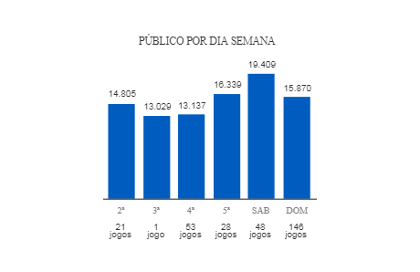Consideremos um torneio de futebol que será disputado por quatro times pelo sistema no qual todos jogam contra todos em dois turnos. Quantos jogos seriam realizados, nesse caso?
Uma maneira de resolver o problema é considerar que cada time fará três jogos “em casa”, isto é, no seu próprio campo. Como temos quatro clubes, basta fazermos 4 x 3 = 12, ou seja, nesse caso, teremos um total de 12 jogos no campeonato.
No Campeonato Brasileiro, vinte (20) times disputam a competição em dois turnos: nesse caso, temos 20 x 19 = 380 jogos (!!!) em dois turnos com 19 rodadas cada um.
De forma geral, em um campeonato com N times, com as mesmas características do Campeonato Brasileiro (todos jogam contra todos em dois turnos), teríamos um total de “N.(N 1)” jogos no campeonato.
Representando-se o número total de jogos por J, podemos escrever:
J = N.(N – 1) ou ainda, aplicando-se a propriedade distributiva,
J(N) = N² – N
Note que a função J(N) = N² – N é um exemplo de função do 2º grau.
O número de jogos J depende do número N de times do campeonato: fazendo uma análise do contexto, foi possível gerar uma função do 2º grau (ou função quadrática) que modela a situação.
Neste item, vamos formalizar o conceito de função polinomial do 2º grau.
Denomina-se função polinomial do 2º grau toda função f: IR ⇒ IR, da forma
y = a.x² + b.x + c (ou f(x) = a.x² + b.x + c), com a IR*, b IR e c IR.
(Para relembrar algumas notações matemáticas que apareceram aqui, observe a definição de função do 1º grau.)
As funções do 2º grau são representadas por curvas denominadas parábolas.
Considerando-se a forma geral y = a.x² + b.x + c, dizemos que:
Se a > 0, então a parábola possui concavidade voltada para cima:
Se a < 0, então a parábola possui concavidade voltada para baixo:
A temperatura de uma reação química varia ao longo do tempo de reação (em geral, medido em segundos).
Vamos considerar a reação química entre alumínio e iodo. O modelo matemático que estima a temperatura de reação ao longo do tempo, nesse caso, é dado por:
T(s) = 2.s² 8.s + 6, em que “T” representa a temperatura em graus Celsius (ºC) e “s” representa o número de segundos decorridos após o início da reação.
Qual é a temperatura no início da reação?
Resolução
Nesse caso, vamos substituir s = 0 segundo, na função dada.
T(s) = 2.s² 8.s + 6 ⇒ T(0) = 2.(0)² 8.(0) + 6 ⇒ T = 6 ºC
Em que instantes a reação alumínio/iodo atinge a temperatura de 0 ºC?
Resolução
Vamos substituir T = 0 ºC na função:
T(s) = 2.s² – 8.s + 6 ⇒ 0 = 2.s² – 8.s + 6
Dividindo-se os dois lados da equação por dois, obtemos:
s² 4.s + 3 = 0
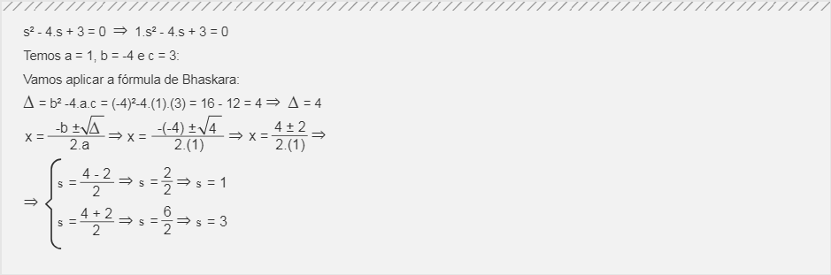Assim, nos instantes 1 segundo e 3 segundos, a temperatura é de 0 ºC.
Em que instante a reação química atinge a menor temperatura? Qual é o valor dessa temperatura?
Resolução
Para respondermos essas questões, vamos obter as coordenadas do vértice da parábola. (Como a > 0, a concavidade da parábola é voltada para cima ∪, o que implica dizer que o vértice é um ponto de mínimo.)
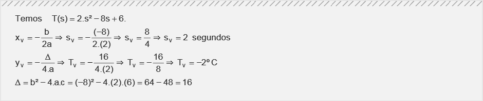Dessa forma, a temperatura mínima de 2 ºC ocorre no instante 2 segundos.
A representação gráfica a seguir nos ajudará a compreender as informações obtidas nos itens a, b e c.
Represente graficamente a situação em análise.
Resolução
No item a, obtemos (0 segundo; 6 ºC).
No item b, obtemos (1 segundo; 0 ºC) e (3 segundos; 0 ºC).
No item c, obtemos o vértice da parábola (2 segundos; 2 ºC).
Com essas informações, podemos fazer um gráfico cartesiano com o apoio do Excel:
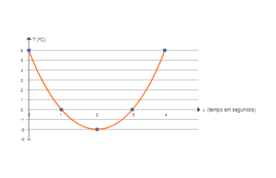Nesse caso, dizemos que a parábola possui concavidade voltada para cima, consequentemente, seu vértice (2 s; - 2 ºC) é um ponto de mínimo da parábola.
Observando o gráfico, podemos afirmar que: no início da reação química, a temperatura está na casa dos 6 ºC; nos primeiros dois segundos de reação, a temperatura cai até atingir seu menor valor no instante 2 s; após dois segundos de reação química, a temperatura aumenta segundo um crescimento parabólico.
A receita mensal R (em reais) de uma empresa é dada por:
R(p) = 20000p – 2000², sendo p o preço de venda de cada unidade.
Qual é a receita, quando o preço de venda de cada unidade é de R$ 8,00?
Resolução
Nesse caso, vamos substituir p = R$ 8,00, na função dada.
R(p) = 20000p – 2000p2 R(8) = 20000.(8) – 2000.(8)2
R = 160000 – 128000 R = R$ 32.000,00
Qual é o preço de venda que maximiza a receita? Qual a receita máxima?
Resolução
Para respondermos a essa questão, vamos obter as coordenadas do vértice da parábola. (Como a < 0, a concavidade da parábola é voltada para baixo ∩, o que implica dizer que o vértice é um ponto de máximo.)
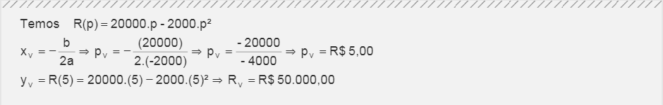Desse modo, R$ 5,00 é o preço de venda que maximiza a receita diária da empresa. O valor da receita máxima é R$ 50.000,00.
A representação gráfica a seguir nos ajudará a compreender melhor o problema que estamos analisando.
Representar graficamente a função receita dada.
Resolução
Temos a função receita dada por R(p) = 20000.p – 2000.p2.
Vamos utilizar o Excel como apoio para visualizar o gráfico dessa função:
| P | R |
| Preço de venda | Receita Mensal |
| de cada unidade (R$) | R$ |
| 0 | 0 |
| 1 | 18000 |
| 2 | 32000 |
| 3 | 42000 |
| 4 | 48000 |
| 5 | 50000 |
| 6 | 48000 |
| 7 | 42000 |
| 8 | 32000 |
| 9 | 18000 |
| 10 | 0 |
Tabela para construção do gráfico de R(p) = 20000.p – 2000.p
Nesse caso, dizemos que a parábola possui concavidade voltada para baixo, consequentemente, seu vértice (R$ 5,00; R$ 50.000,00) é um ponto de máximo da parábola.
Observando o gráfico, podemos afirmar que:
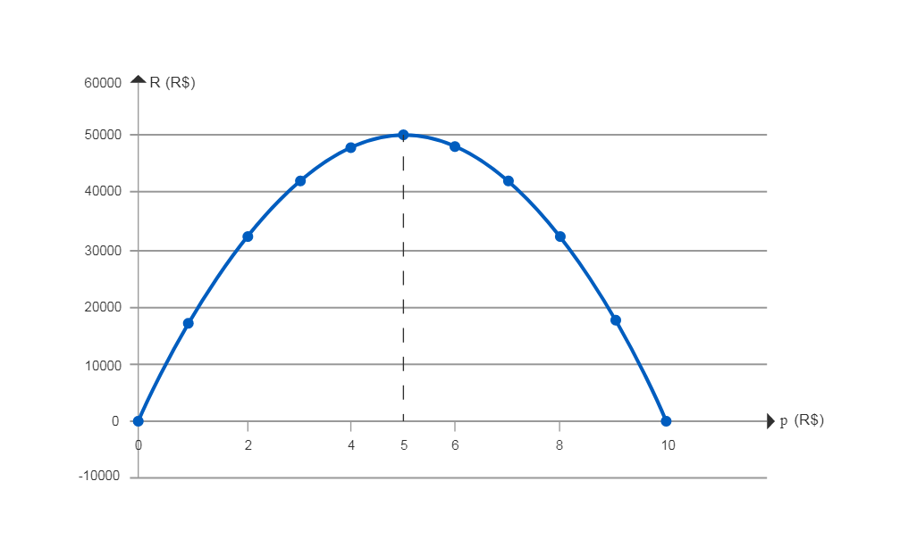A um preço teórico de 0 reais cada unidade vendida, possivelmente, a empresa venderia todas as unidades (de graça...). Entretanto, sua arrecadação, sua receita seria nula.
A um preço de 10 reais cada unidade vendida, a receita volta a ser zero. Isso significa que R$ 10,00 é um preço completamente inadequado para o mercado ou um preço que o cliente não está disposto a pagar, ou um preço com o qual a empresa facilmente perderia espaço para a concorrência: o número de unidades vendidas tende a ser zero, o que implica em receita nula.
A um preço de R$ 5,00 cada unidade, a empresa teria sua receita máxima. Assim, para maximizar a receita, a empresa deve trabalhar com o preço ideal de R$ 5,00 ou com preços muito próximos a R$ 5,00.
Um determinado software com aplicações no setor de turismo acaba de ser lançado. Utilizando-se de um modelo matemático, estima-se que daqui a t meses, o número N de pessoas que utilizarão esse software será dado por:
N(t) = 40t² - 880t + 6000.
No lançamento, qual a expectativa de número de usuários do software?
Resolução
Nesse caso, vamos substituir t por zero (t = 0).
N(0) = 40.(0)² - 880.(0) + 6000 ⇒ N = 6000 usuários
Quantas pessoas utilizarão o software daqui a um trimestre? E daqui a três anos?
Resolução
1) Vamos substituir t por 3 (t = 3 meses = 1 trimestre).
N(3) = 40.(3)² - 880.(3) + 6000 ⇒ N = 3720 usuários
2) Vamos substituir t por 36 (t = 36 meses = 3 anos).
N(36) = 40.(36)² - 880.(36) + 6000 ⇒ N = 26160 usuários
Daqui a quantos meses será registrado o menor número de usuários?
Resolução
Notemos que temos uma função do segundo grau com a = 40, ou seja, a > 0. Portanto, a parábola possui concavidade voltada para cima. Sendo assim, o vértice é um ponto de mínimo.
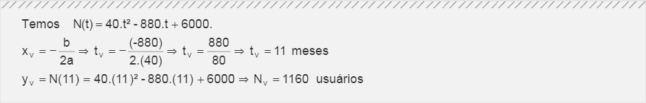Fazer o gráfico.
Resolução
Com o apoio do Excel, podemos fazer o gráfico da função dada.
| T | N |
| Tempo decorrido | Número de usuarios |
| em meses | N(t) = 40.t² - 880.t + 6000 |
| 0 | 6000 |
| 3 | 3720 |
| 9 | 1320 |
| 11 | 1160 |
| 13 | 1320 |
| 20 | 4400 |
| 36 | 26160 |
Tabela para construção do gráfico de N(t) = 40.t² – 880.t + 6000
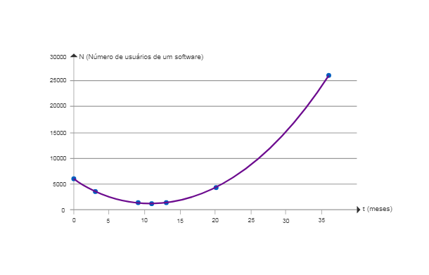Uma consultoria de administradores, após uma pesquisa realizada em determinada microempresa, concluiu que, para o próximo semestre, essa microempresa terá seu lucro mensal L (em reais) calculado por meio do modelo matemático:
L(p) = – 5000.p² + 60000.p – 160000,
sendo p o preço de venda de cada unidade comercializada por essa microempresa.
a) Qual o “lucro”, quando o preço de venda de cada unidade é, teoricamente, zero? Quais os preços de venda de cada unidade que determinam um equilíbrio entre Receita e Despesas?
Resolução
1) Substituindo-se p = 0 na função dada, obtemos:
L(0) = – 5000.(0)² + 60000.(0) – 160000 ⇒ L = – R$ 160.000,00
2) O Equilíbrio (Igualdade) entre Receita e Despesas implica Lucro zero. Portanto, vamos substituir L por zero na função dada:
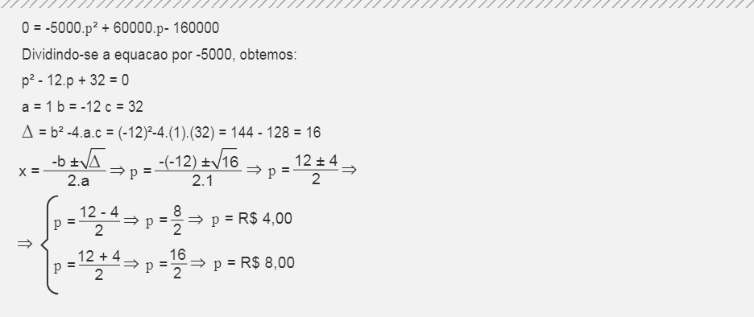Sendo assim, a um preço de R$ 4,00 ou R$ 8,00 cada unidade a empresa tem lucro zero. Podemos dizer que, a um preço de R$ 4,00 cada unidade, o que a empresa arrecada apenas cobre seus custos, gerando lucro zero. A um preço de R$ 8,00 a unidade, uma possibilidade é afirmarmos que a empresa vende menos, apenas o suficiente para cobrir suas despesas, voltando a ter lucro zero.
b) Qual é o preço de venda de cada unidade que maximiza o lucro mensal dessa microempresa no período em estudo? Qual o lucro mensal máximo para o período, nas condições dadas?
Resolução
Essa questão se refere ao vértice da parábola. Como a função possui a < 0 (observe que a = - 5000 é o termo que multiplica p²), a concavidade da parábola é voltada para baixo ∩, portanto, a parábola tem ponto de máximo.
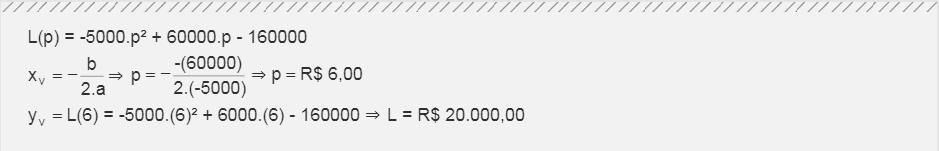Sendo assim, ao preço de R$ 6,00 a microempresa tem seu lucro máximo de R$ 20.000,00.
c) Representar graficamente a função lucro dada.
Com o apoio do Excel, organizamos uma tabela de valores e solicitamos um “gráfico de dispersão”.
| p | L |
| Preço de venda de | Lucro mensal(R$) |
| cada unidade(R$) | L(p) = -5000.p² + 60000.p - 160000 |
| 0 | -160000 |
| 1 | -105000 |
| 2 | -60000 |
| 3 | -25000 |
| 4 | 0 |
| 5 | 15000 |
| 6 | 20000 |
| 7 | 15000 |
| 8 | 0 |
| 9 | -25000 |
| 10 | -60000 |
| 11 | -105000 |
| 12 | -160000 |
Tabela para construção do gráfico de L(p)=-5000p² + 6000p - 160000
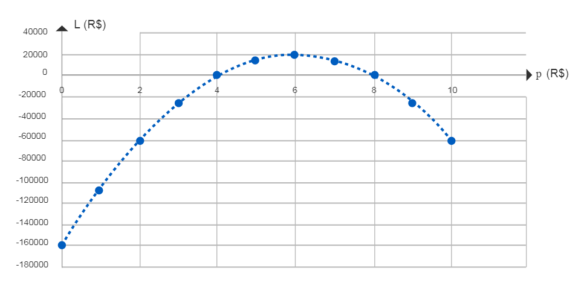A receita mensal R (em reais) de uma empresa é dada por:
R(n) = 100000n – 5000n²,
sendo n o número de milhares de unidades vendidas mensalmente.
a) Qual a receita para 11000 unidades vendidas?
Resolução
Nesse caso, basta fazermos n = 11 (11 milhares = 11000 unidades):
R(n) = 100000.n – 5000.n² ⇒
⇒ R(11) = 100000.(11) – 5000.(11)² ⇒
⇒ R(11) = 1100000 – 5000.(121) ⇒
⇒ R(11) = 1100000 – 605000 ⇒
⇒ R(11) = 495000
Temos uma receita de R$ 495.000,00.
b) Quantas unidades devem ser vendidas para gerar uma receita de R$ 420.000,00?
Resolução
Nesse item, vamos fazer R = 420000:
R(n) = 100000.n – 5000.n² ⇒
⇒ 420000 = 100000.n – 5000.n² ⇒
⇒ 5000.n² – 100000.n + 420000 = 0
Vamos resolver essa equação do 2º grau por meio da Fórmula de Báscara:
Portanto, devem ser vendidas 6000 unidades ou 14000 unidades.
c) Quantas unidades devem ser vendidas para se maximizar a receita? Qual a receita máxima?
Resolução
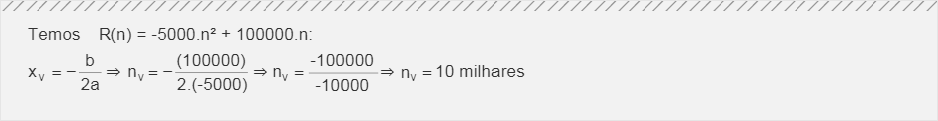Vamos substituir n = 10 na função dada:
R(n) = 100000.n – 5000.n² ⇒
⇒ R(10) = 100000.(10) – 5000.(10)² ⇒
⇒ R(11) = 1000000 – 5000.(100) ⇒
⇒ R(11) = 1000000 – 500000 ⇒
⇒ R(11) = 500000
Temos uma receita máxima de R$ 500.000,00.
d) Representar graficamente a função dada.
Resolução
Utilizando o Excel como apoio, obtemos o gráfico da função:
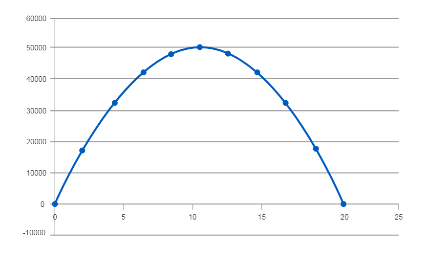O lucro mensal L (em reais) de uma empresa é dado por:
L(p) = –3000p² + 36000p – 81000,
sendo p o preço de venda de cada unidade.
a) Qual é o lucro, quando o preço de venda de cada unidade é R$ 4,20? E quando o preço de venda unitário é R$ 8,00?
Resolução
1) Vamos substituir p = 4,20 na função dada:
L(p) = –3000.p² + 36000.p – 81000 ⇒
⇒ L(4,20) = –3000.(4,20)² + 36000.(4,20) – 81000 ⇒
⇒ L(4,20) = 17280 Lucro de R$ 17.580,00
2) Vamos substituir p = 8 na função dada:
L(p) = –3000.p² + 36000.p – 81000 ⇒
⇒ L(8) = –3000.(8)² + 36000.(8) – 81000 ⇒
⇒ L(8) = 15000 Lucro de R$ 15.000,00
b) Determine o intervalo de preço de venda para o qual a receita da empresa passa a superar as despesas.
Resolução
Inicialmente, vamos verificar o momento no qual o lucro é zero.
Substituindo-se L = 0 na função dada, obtemos:
L(p) = –3000.p² + 36000.p – 81000 ⇒
⇒ 0 = –3000.p² + 36000.p – 81000 ⇒
Podemos dividir os dois membros da equação por “- 3000”:
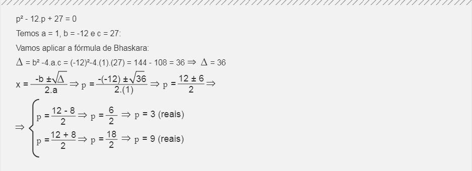A receita supera as despesas quando o preço de venda está entre R$ 3,00 e R$ 9,00. (O gráfico apresentado no item “d” ilustra essa situação.)
c) Qual o preço de venda que maximiza o lucro? Qual é o lucro máximo?
Resolução
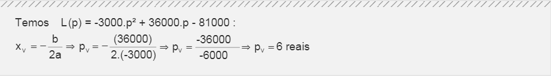Vamos substituir p = 6 na função dada:
L(p) = –3000.p² + 36000.p – 81000 ⇒
⇒ L(6) = –3000.(6)² + 36000.(6) – 81000 ⇒
⇒ L(6) = 27000 Lucro máximo de R$ 27.000,00
d) Representar graficamente a função lucro dada.
Resolução
Utilizando o Excel como apoio, obtemos o gráfico da função:
e) Para que valores de p o lucro é superior a R$ 20.250,00?
Resolução
Fazendo-se L = 20250, obtemos:
O lucro é superior a R$ 20.250,00 quando o preço de venda está entre R$ 4,50 e R$ 7,50.
Determinada indústria tem seu lucro mensal estimado pela fórmula:
L(n) = – 8000n² + 128000n – 480000,
sendo n o número de milhares de unidades vendidas mensalmente.
a) Qual será o lucro, caso não seja vendida nenhuma unidade? Quantas unidades devem ser vendidas mensalmente para que se obtenha um equilíbrio entre Receita e Despesas?
b) Quantas unidades devem ser vendidas para se maximizar o lucro mensal dessa indústria? Qual é o lucro mensal máximo previsto?
Resolução
8000 unidades vendidas determinam o lucro máximo de R$ 32.000,00.
c) Representar graficamente a função lucro dada (p = 0; L = 0; vértice).
Resolução
Utilizando o Excel como apoio, obtemos o gráfico da função:
Uma empresa do setor automotivo, em um estudo feito por seus analistas, obteve os seguintes resultados:
N(p) = 30000 – 2000p
C(N) = 26000 + N
Em que o número N de unidades vendidas mensalmente depende do preço p de venda de cada unidade e C é o custo total de produção das N unidades, para valores em reais.
Nesse caso, obtenha:
a) a função R(p), o preço de venda que maximiza a receita e o valor da receita máxima. Faça um esboço do gráfico.
Resolução
1) Vamos obter a Função Receita:
Receita = (número de unidades vendidas) vezes (preço de venda de cada unidade)
Assim, temos:
2) Vamos obter o preço que maximiza a receita e o valor da receita máxima:
Vamos substituir p = 7,5 na função dada:
3) Vamos fazer um esboço do gráfico:
b) a função L(p), o preço de venda que maximiza o lucro e o valor do lucro máximo. Faça um esboço do gráfico.
Resolução
1) Vamos obter a Função Lucro:
2) Vamos obter o preço de venda que maximiza o lucro e o valor do lucro máximo:
Vamos substituir p = 8 na função dada:
3) Vamos fazer um esboço do gráfico com apoio do Excel:
Os dados experimentais indicados a seguir correspondem às concentrações de uma substância química medida em intervalos de 1 segundo. Assumindo que a linha que passa pelos três pontos experimentais é uma parábola, determine a concentração (em mol) após 4 segundos.
| Tempo(s) | Concentração(mol) |
| 1 | 27,00 |
| 2 | 32,00 |
| 3 | 35,00 |
Resolução
1) A forma geral de uma função
Temos três pares ordenados (x; y) dados no enunciado:
(1; 27); (2; 32) e (3; 35)
Vamos substituir os pares ordenados na forma geral y = ax² + bx + c e resolver um sistema de equações:
Na primeira equação do sistema, ao isolarmos a incógnita c, obtemos:
c = 27 – a – b
Vamos substituir c = 27 – a – b na 2ª equação e na 3ª equação do sistema:
Ao somarmos, membro a membro, as equações do sistema, obtemos:
a = 1 a = 1
Como 3.a + b = 5, temos:
3.(-1) + b = 5 b = 8
Como a + b + c = 27, temos:
-1 + 8 + c = 27 c = 20
Temos y = a.x² + b.x + c, a = 1, b = 8 e c = 20. Portanto:
y = -1.x² + 8.x + 20
2) Substituindo-se x = 4 na função obtida, obtemos:
y = x² + 8.x + 20
y = (4)² + 8.(4) + 20
y = 36
Portanto, temos uma concentração de 36 unidades moleculares após 4 segundos.
a) R$ 495.000,00 b) 6000 unidades ou 14000 unidades c) 10000 unidades; R$ 500.000,00 d) gráfico
a) R$ 17.280,00; R$ 15.000,00 b) 3 < p < 9 c) R$ 6,00; R4 27.000,00 d) gráfico e) 4,50 < p < 7,50
a) – R$ 480.000,00; 6000 unidades ou 10000 unidades b) 8000 unidades; R$ 32.000,00
a) R(p) = 30000p – 2000p²; R$ 7,50; R$ 112.500,00
b) L(p) = -2000p² + 32000p – 56000; R$ 8,00; R$ 72.000,00